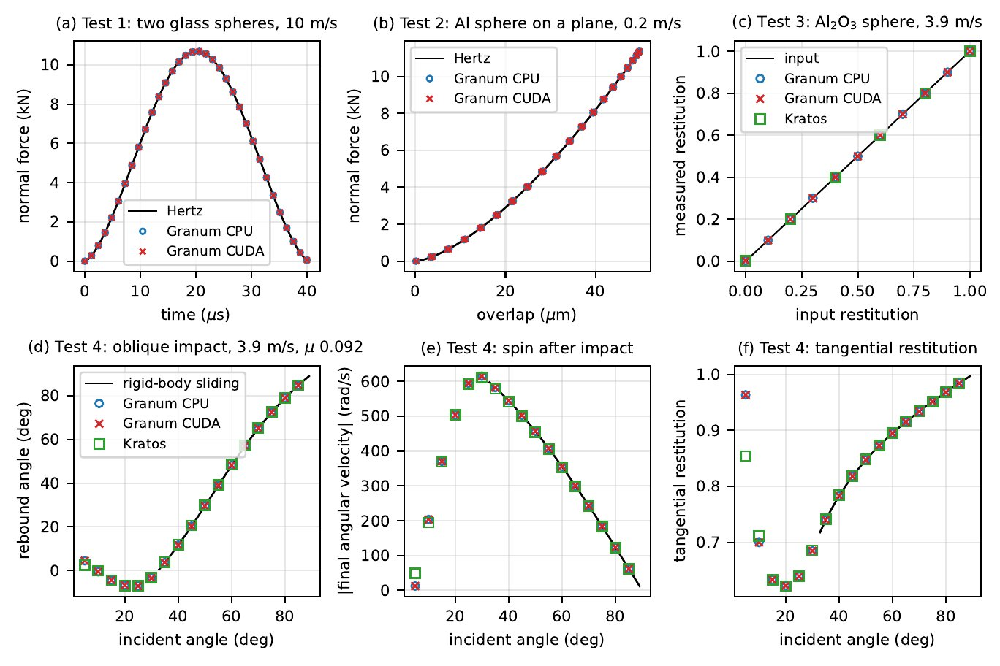
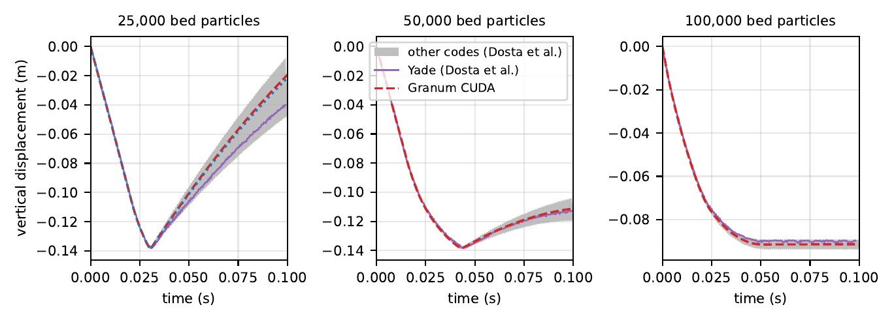
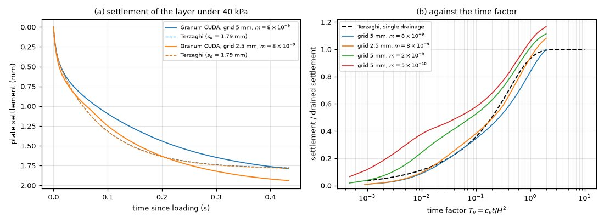
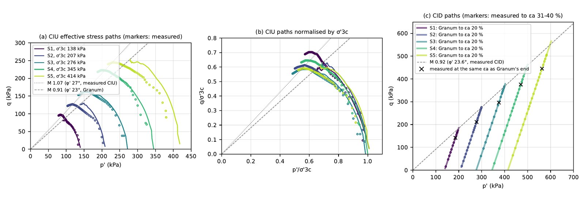
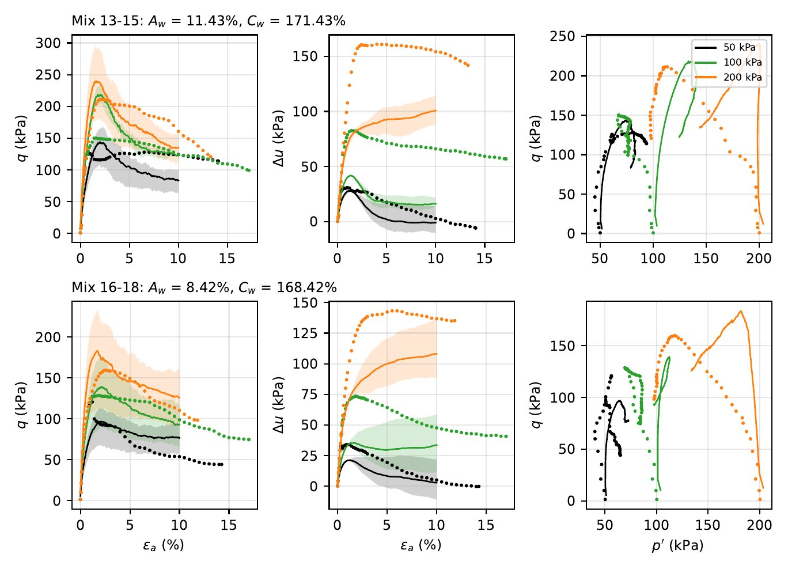
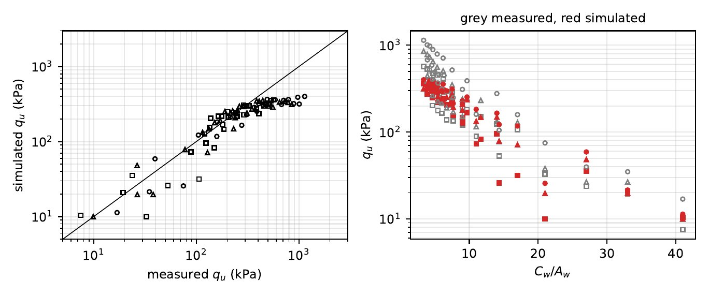
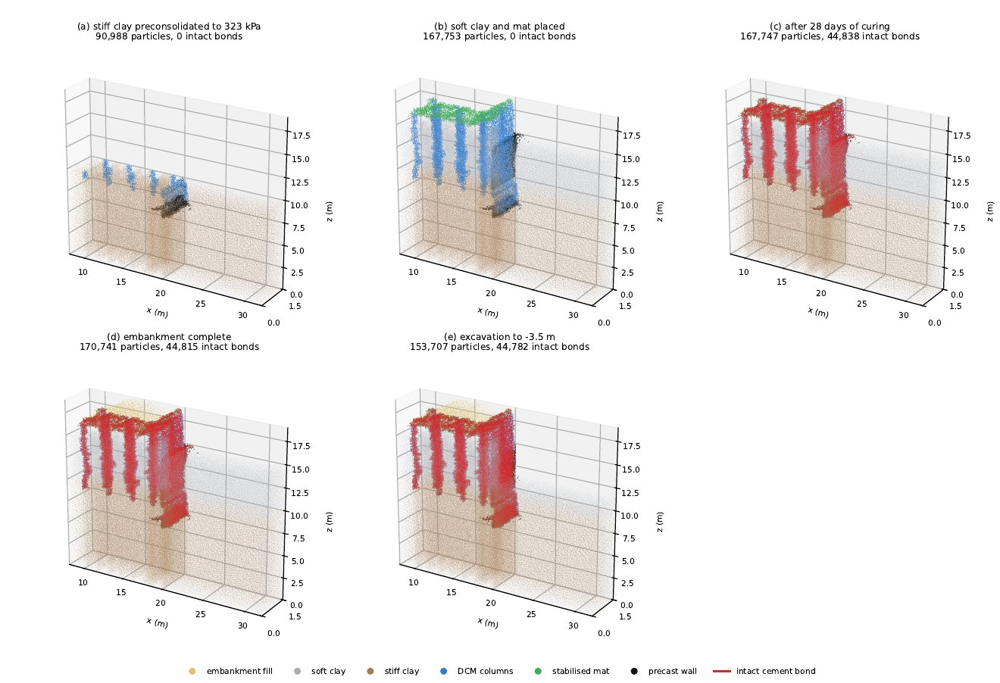
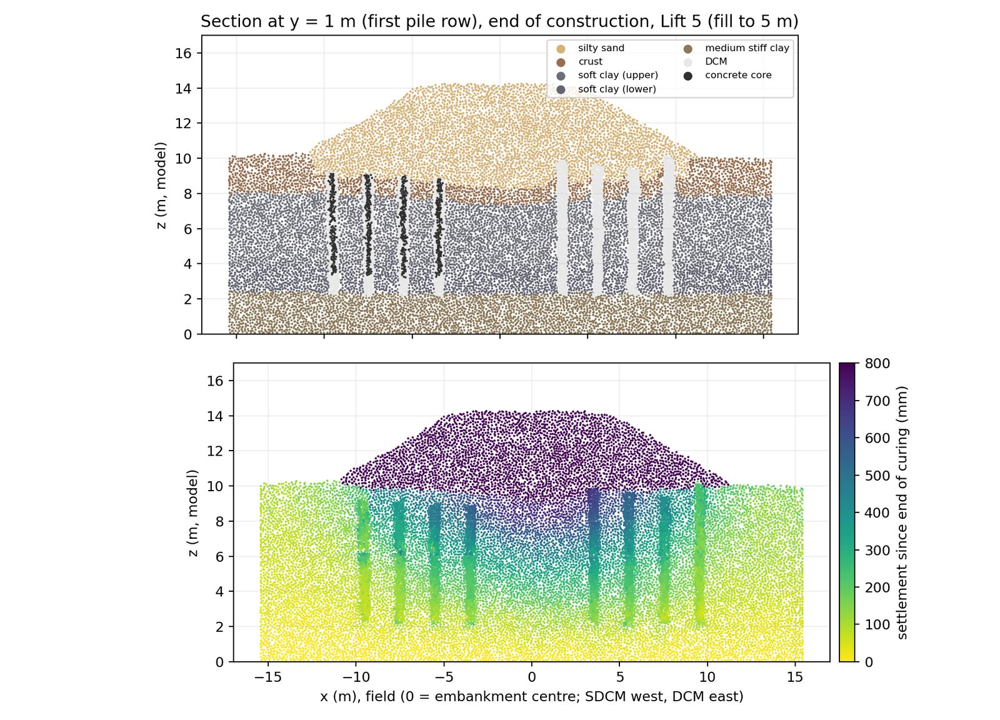
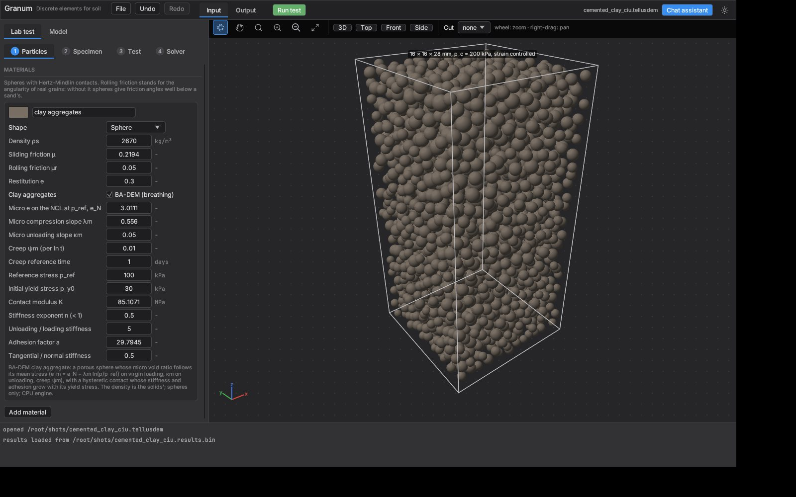

Three engines, one algorithm
A double-precision CPU engine, a CUDA engine compiled at run time with NVRTC, and a wgpu engine for Metal, Vulkan and DirectX 12. Kahan-compensated positions keep single precision honest.
Discrete element method · Rust · CUDA · MCP-ready
Granum simulates sand, soft clay and cement-admixed clay as particles. It runs laboratory tests and staged field models on one GPU, and an AI agent can build, run and report them for you.
Read the paper on Zenodo → doi:10.5281/zenodo.23652515
Stage 1 · Generating grains
A project is a laboratory test or a staged model built like a finite element model. The same project file runs in the desktop app, from a script, through the AI agent, or as a batch on a remote GPU.
A double-precision CPU engine, a CUDA engine compiled at run time with NVRTC, and a wgpu engine for Metal, Vulkan and DirectX 12. Kahan-compensated positions keep single precision honest.
Drained and undrained triaxial, stress-path CIU, oedometer, unconfined compression, Brazilian, deposition, angle of repose and shallow footing, each with its summary values and quality checks.
Regions, rigid structures, DCM columns, mats and walls, placed, cured, loaded and excavated in phases, with settlement plates, inclinometers and piezometers recorded over time.
An excess pore pressure on a coarse grid, undrained or consolidating by Darcy flow, with an energy-consistent force on the grains and a time scale that runs months of consolidation in seconds.
A Model Context Protocol server with 33 tools lets an LLM agent create a project, run it, read the results and write the report, while you watch every step in the app.
Many specimens run at once on one card, so Latin hypercube and local searches can test every candidate on every test with repeated packings, and finish in hours instead of weeks.
MCP-ready
The Model Context Protocol server is part of Granum itself. Start the program with --mcp and any MCP client sees its 33 tools, so there is no adaptor, plugin, Python wrapper or separate MCP server to install and keep in step with the solver.
# register Granum's built-in MCP server
claude mcp add granum -- granum --mcp// Claude Desktop, Cursor and other MCP clients
{
"mcpServers": {
"granum": { "command": "granum", "args": ["--mcp"] }
}
}# on the GPU machine: the same tools over HTTP, with a token
granum-server --http 0.0.0.0:8787 --token $TOKEN
# the app and agents then calculate on that GPUThe commands are granum and granum-server. The built-in chat assistant uses the same server, so a model an agent builds opens in the app and the other way round.
Step-by-step setup for Claude Code, Claude Desktop and Cursor, and the chat assistant →
Replay of a live run: DeepSeek V4.1 Flash through the built-in TigrimOS chat set up, ran and reported the test in 25 s.
New particle
In Granum a clay particle is a coarse-grained lump of saturated clay fabric. It shrinks as its own mean stress rises, along a normal compression line with unloading lines and creep, so the radius of every particle follows the consolidation of the clay around it.
Neighbouring aggregates touch through an adhesive, hysteretic contact whose stiffness grows with the aggregate's yield stress. In cement-admixed clay, bonds nucleate and grow during a simulated curing in proportion to the local cement-to-water ratio and the degree of hydration, and an aggregate that loses its bonds loses part of its yield stress.
Each benchmark is reported with its run time on the GPU that ran it, including the places where the model still falls short.






Measured with the CUDA engine. Large models run at about 10⁸ to 2.4×10⁸ particle-steps per second.
Professional and Academic Research editions
Silos and hoppers, rotating drums, collapsing slopes, impacts and tamping, in real time with no numerical damping. Hopper and drum walls that turn, rigid weights that fall freely, sinks that weigh the outflow, and initial states read from a file. Each case is checked against the open-source codes of the DEM8 benchmark or a laboratory law. Not included in the Education edition.
Youwai, S. (2026). Granum, an agentic-AI GPU discrete element program: verification for dynamic granular flows. Zenodo. doi:10.5281/zenodo.23666311


A unit cell of 49,503 particles consolidates for 470 field days at 0.24 ms per step, and a half-section of 502,797 particles records settlement, lateral movement and excess pore pressure at 58 monitors as it consolidates.
Eighteen drained triaxial tests ran at once on one card in 72 s to choose a fill whose friction angle is 30°.
Input, test, output and agent views of the same cemented-clay project.

The same solver in both, with dynamic granular flow reserved for the Professional and Academic Research licences. Choose by how you will use it.
For students and teachers
Free
For teaching and non-commercial academic research. Need larger models or dynamic analysis for your research? Ask for a free Academic Research licence.
For engineering practice
On request
Tell us about your project and we will reply with a licence offer.
The paper
Sompote Youwai, King Mongkut's University of Technology Thonburi, 2026. The design of the program and its three engines, the Chung and Ooi impact benchmarks (within 0.1 % of Hertz), the DEM8 penetration benchmark against eight open-source codes, and Granum in geotechnical use: triaxial tests 16 times faster than 32 CPU threads, an eleven-parameter cemented-clay calibration in hours, and a 785,000-particle embankment in 2.5 hours.
@misc{youwai2026granum,
author = {Youwai, Sompote},
title = {Granum: an agentic, GPU-accelerated
discrete element program for soil},
year = {2026},
publisher = {Zenodo},
doi = {10.5281/zenodo.23652515},
url = {https://zenodo.org/records/23652515}
}
For the Professional edition, collaboration, or questions about the models, write to us. The form opens your email program with the message filled in.
AI Research Group
Department of Civil Engineering
King Mongkut's University of Technology Thonburi (KMUTT)
Bangkok, Thailand
tellusfem@gmail.com